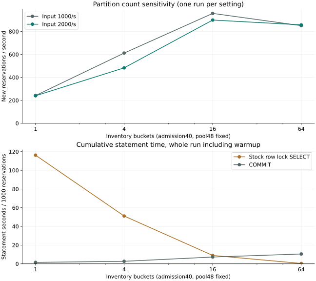

05 / OVERLOAD BUDGET
동시 입장 제한과 재고 분할 수에 따른 처리량·지연
한정 판매에서 동시 요청을 더 많이 받아들이는 것이 항상 처리량 개선으로 이어지지는 않았다. 같은 재고 행을 기다리는 요청이 늘면 성공 처리보다 대기 비용이 커지므로, 신규 요청의 429 거절뿐 아니라 이미 접수한 거래의 잠금·커밋·결제 복구 여력도 함께 봐야 한다. 같은 노트북과 DB 내구성 설정에서 단일 재고 행과 분할 구현의 입장 제한·회차 분산·사용자 편향을 각각 바꿔, 동시성을 늘렸을 때의 이득과 비용을 비교했다.
재고 분할은 동시 입장 수를 늘렸을 때 신규 예약이 증가했지만, 상한 40에서는 16개 재고 행의 경합이 다시 커졌다. 또한 일부 구간에서는 k6 VU가 부족해 예정한 요청을 모두 시작하지 못했으므로, 초당 2,000건을 손실 없이 처리한 결과로 볼 수는 없다. 아래 결과는 실제 발생률과 미시작 작업을 함께 확인한 민감도 진단이다.
동시 입장 제한의 민감도
모든 변경 API에 semaphore를 적용해 슬롯을 얻은 요청만 DB 트랜잭션을 시작하고, 얻지 못한 요청에는 429를 반환한다. HTTP 대기·Tomcat 큐·Hikari pool에도 상한을 두고, 미확정 결제는 DB에 저장된 별도의 256건 한도로 제한했다. 사용자 제약, 커밋 후 예약 201, PG 승인 확인 후 구매 확정은 모든 설정에서 동일하다.
pool은 48로 고정하고 입장 제한을 6/12/24/40으로 바꾸며, 워밍업 100/s20초 뒤 1000→2000→100/s를 각 30초 실행했다. 이 표는 설정 민감도 각 1회이며, 세 반복으로 분산을 본 재고 구조 비교와 구분한다. 설정별 시점과 배터리·공유 디스크 조건이 같지 않으므로 작은 차이로 최적값을 단정하지 않는다.
| 구현 | 동시 입장 | 목표 iteration/s | 신규 예약/s | 성공 p99 ms | 해당 단계 dropped | 근거 |
|---|---|---|---|---|---|---|
| 단일 행 | 6 | 1000 | 341.8 | 30.543 | 0 | 단일 재고 행 · 측정 결과 |
| 단일 행 | 6 | 2000 | 329.1 | 30.974 | 0 | 단일 재고 행 · 측정 결과 |
| 재고 분할 | 6 | 1000 | 521.1 | 22.733 | 0 | 재고 분할 · 측정 결과 |
| 재고 분할 | 6 | 2000 | 561.4 | 16.523 | 0 | 재고 분할 · 측정 결과 |
| 단일 행 | 12 | 1000 | 239.8 | 69.348 | 0 | 단일 재고 행 · 측정 결과 |
| 단일 행 | 12 | 2000 | 304.1 | 61.916 | 0 | 단일 재고 행 · 측정 결과 |
| 재고 분할 | 12 | 1000 | 858.5 | 19.954 | 0 | 재고 분할 · 측정 결과 |
| 재고 분할 | 12 | 2000 | 835.2 | 22.915 | 0 | 재고 분할 · 측정 결과 |
| 단일 행 | 24 | 1000 | 313.0 | 123.215 | 0 | 단일 재고 행 · 측정 결과 |
| 단일 행 | 24 | 2000 | 226.7 | 128.891 | 0 | 단일 재고 행 · 측정 결과 |
| 재고 분할 | 24 | 1000 | 981.7 | 29.649 | 0 | 재고 분할 · 측정 결과 |
| 재고 분할 | 24 | 2000 | 1146.1 | 38.011 | 0 | 재고 분할 · 측정 결과 |
| 단일 행 | 40 | 1000 | 337.8 | 188.202 | 0 | 단일 재고 행 · 측정 결과 |
| 단일 행 | 40 | 2000 | 244.4 | 200.177 | 47 | 단일 재고 행 · 측정 결과 |
| 재고 분할 | 40 | 1000 | 994.6 | 43.894 | 0 | 재고 분할 · 측정 결과 |
| 재고 분할 | 40 | 2000 | 1187.1 | 83.932 | 71 | 재고 분할 · 측정 결과 |

입장 제한의 효과는 재고 구조가 실제로 병렬 처리할 수 있는 범위에 따라 달랐다. 단일 행은 동시 입장 수를 늘려도 같은 재고 행과 커밋을 기다려 성공 p99에 대기 비용이 나타난 반면, 분할 구조는 독립된 행을 갱신할 수 있어 입장 24까지 신규 성공이 늘었다. 입장 40에서는 처리량이 추가로 늘어도 꼬리 지연이 길어져 두 지표의 교환이 생겼다. 여기서 성공 처리량은 거절 응답을 제외한 신규 예약 수다.
버킷 수 1·4·16·64 비교
같은 알고리즘에서 경합 민감도를 확인하기 위해 입장 40·pool 48·동일 입력을 유지하고 버킷 수만 1/4/16/64로 바꿨다. 버킷 1도 별도 재고 테이블과 선택 SQL을 사용하므로 최초의 단일 sales 행 코드와 같지는 않다. 버킷 수 1→64에 따른 차이는 이 분할 구현 안에서 비교했다.
| 버킷 수 | 2000 입력 신규/s | 성공 p99 ms | 재고 잠금 SELECT 누적s | COMMIT 누적s | 전체 dropped | 근거 |
|---|---|---|---|---|---|---|
| 1 | 239.8 | 241.763 | 2258.6 | 29.1 | 43 | 재고 분할 · 측정 결과 |
| 4 | 482.8 | 252.331 | 1934.1 | 100.8 | 56 | 재고 분할 · 측정 결과 |
| 16 | 899.4 | 128.486 | 541.0 | 438.8 | 135 | 재고 분할 · 측정 결과 |
| 64 | 857.2 | 96.882 | 18.8 | 589.2 | 174 | 재고 분할 · 측정 결과 |

SQL 누적 시간은 동시에 실행된 여러 트랜잭션의 합이라 벽시계 시간보다 클 수 있으므로, SELECT 시간만 보지 않고 data_lock_waits의 대기 행, InnoDB row-lock 시간, COMMIT·로그 I/O를 함께 대조했다. PK 한 행 접근이어도 그 행의 잠금은 기다릴 수 있으며, fsync나 COMMIT 증가만으로 물리 디스크를 유일한 병목으로 지목하기에는 근거가 부족했다.
단일 회차와 16개 회차의 차이
총 입력은 유지하고 16개 회차에 순환 분산했다. 매 실행 데이터를 초기화하고 워밍업 20초 뒤 300→900→1600→100/s 각 30초, 세 번씩 순서를 교대했다. 결과는 중앙값(최소–최대)으로 표시했으며, 마지막 100/s는 과부하 이후 회복 구간으로 해석한다. 단일 재고 행의 3회차 도중 전원이 Battery에서 AC로 바뀌었고, 재고 분할의 3회차는 AC였다. 이 3반복을 완전히 고정된 전원 조건이라고 하지 않으며, 최종 90초 비교는 별도 동일 Battery 구간으로 수행했다.
| 구현 | 목표 iteration/s | 신규 예약/s | 실행별 성공 p99 ms | 전체 dropped 1·2·3회차 |
|---|---|---|---|---|
| 단일 행 | 300 | 299.3 (298.6–299.4) | 12.9 (12.5–25.2) | 0/43/0 |
| 단일 행 | 900 | 860.0 (824.7–869.6) | 19.3 (18.3–20.7) | 0/43/0 |
| 단일 행 | 1600 | 839.2 (804.9–842.7) | 24.1 (23.8–25.8) | 0/43/0 |
| 단일 행 | 100 | 100.0 (100.0–100.0) | 9.7 (9.5–10.9) | 0/43/0 |
| 재고 분할 | 300 | 299.7 (299.6–300.0) | 13.6 (11.6–14.8) | 0/0/187 |
| 재고 분할 | 900 | 779.9 (666.7–816.6) | 21.9 (20.6–28.5) | 0/0/187 |
| 재고 분할 | 1600 | 774.5 (578.9–803.9) | 25.3 (25.2–43.8) | 0/0/187 |
| 재고 분할 | 100 | 100.0 (100.0–100.0) | 10.3 (10.2–11.8) | 0/0/187 |
회차 식 sale=index%16과 사용자 식 user=userBase+index가 연관돼 한 회차의 선호 버킷은 한 곳으로 모이므로, 이 입력은 16회차×16버킷에 균등 분산된 부하가 아니다. 따라서 회차 간 재고 행이 분리되는 효과는 확인할 수 있지만, 회차 내부의 버킷 편향은 그대로 남는다. 해시나 랜덤 라우팅으로 바꿀 때도 실제 사용자 ID와 회차 분포를 반영한 검증이 필요하다.
품절·중복·사용자 편향 시험
| 구현 | 입력 | 시작 iteration | HTTP 요청 | 신규 예약 응답ID | 전체 dropped | 근거 |
|---|---|---|---|---|---|---|
| 단일 행 | 순간 품절 | 32001 | 32001 | 100 | 0 | 단일 재고 행 · 측정 결과 |
| 단일 행 | 중복 요청 | 32003 | 66637 | 6537 | 0 | 단일 재고 행 · 측정 결과 |
| 단일 행 | 사용자 편향 | 32003 | 32003 | 15429 | 0 | 단일 재고 행 · 측정 결과 |
| 재고 분할 | 순간 품절 | 32001 | 32001 | 100 | 0 | 재고 분할 · 측정 결과 |
| 재고 분할 | 중복 요청 | 32002 | 77106 | 7509 | 0 | 재고 분할 · 측정 결과 |
| 재고 분할 | 사용자 편향 | 32003 | 32003 | 15409 | 0 | 재고 분할 · 측정 결과 |
순간 품절 시험에서는 재고 100개를 소진하는 경쟁을 만들고 신규 예약 ID 100개만 성공으로 세었으며, 이후의 409·429 응답은 제외했다. 중복 요청 시험에서는 같은 사용자·키 재요청과 같은 사용자의 새 키 요청을 함께 보냈다. 한 iteration에서 여러 HTTP가 발생해도 같은 201 예약 ID는 한 번만 센다. DB request_results·guard·예약을 대조해 응답 결과와 영속 배정이 일치하는지 검사했다.
사용자 편향 시험에서는 90% 분기의 사용자를 같은 선호 버킷에 배정했으며, 나머지 10%에도 같은 버킷이 일부 포함된다. 초기 ID 식은 index*64와 index를 섞으면서 일부 사용자 중복도 만들었다. 이 원본에는 같은 사용자에 대한 409와 재고 잠금 영향이 함께 들어 있어 고유 사용자의 편향 손실률만 분리할 수 없다. 선호 버킷이 소진된 뒤 다른 버킷을 탐색하는 정확성은 별도 버킷 계약 시험에서 확인했다.
부하 발생기의 미시작 iteration과 서버 거절 구분
k6의 native arrival-rate executor를 사용해 부하를 발생시키고, 각 단계의 target_iterations, logical_started, logical_completed, iterations, http_reqs, dropped_iterations를 따로 보존했다. TRANSPORT_ERROR와 서버 OVERLOADED/SOLD_OUT/사용자 제한도 종류별 지연과 수로 분리한다. 단계 사이 5초 간격보다 gracefulStop10초가 길어 k6의 전체 사전 할당 상한(vus_max)은 단계별 128의 두 배 256이었다. 실제 활성 VU는 별도 gauge이며 1초 표본이 순간 최대를 놓칠 수 있다. k6가 VU를 구하지 못한 iteration은 HTTP를 시작하지 않았으므로 서버 오류율 분모나 성공 처리량에 더하지 않는다.
단계별 128VU에서 일부 고부하 구간에 dropped가 발생했는데, CPU가 한 코어를 계속 쓰지 않아도 응답 대기로 VU가 부족할 수 있다. 따라서 k6의 누적 CPU와 peak RSS뿐 아니라 실제 발송 수도 함께 확인해 발생기 포화와 서버 한계를 구분했다. 반면 혼합 부하는 상태 확인을 포함하므로 단계별 512VU를 별도 예산으로 사용하되, 동일 혼합 비교군끼리는 이 조건을 맞췄다.
앱·PG·k6는 호스트에서, MySQL은 Docker VM 안에서 실행한다. 후속 CPU 집계는 VM+Docker backend와 앱·PG·k6·관측기를 더하고 내부 DB cgroup은 다시 더하지 않았다. 5초 표본의 시작·끝 차이와 커널·공유 서비스의 미분리 비용은 남는다. 초기 재고 비교에는 VM 자료가 없으므로 이 후속 집계와 같은 전체 자원 비용으로 취급하지 않는다.
전원 상태와 열 경고도 실행 원본에 기록했지만, Battery Power에서 커밋 지연이 변한 사례만으로 전원 상태를 원인으로 확정할 수는 없다. CPU quota도 전용 물리 코어가 아니며 다른 프로세스와 CPU·디스크를 공유한다. 따라서 이 시험에서 확인한 처리량은 해당 노트북 조건에 한정되며, 물리 고가용성은 검증하지 않았다.
이어 읽기: 재고 행 경합과 구조적 대안 · 외부 결제 복구의 비용
측정 조건 상세: 전원 전환 시각
16개 회차 분산 시험에서 단일 재고 행의 3회차 전원 전환은 11:15:26 UTC였다. 해당 반복은 제외하지 않고 결과에 포함했다.
후속 비교와 해석 범위
이 글 이후에는 종결 충돌 보존과 KRW 금액 검증을 공통 수정하고, 기존 두 구조와 만료 배치 구조를 결제 재시도·최초 결제 고객·재고 반환 조건에서 다시 비교했다. 최신 결과는 아래 후속 글에서 다루되, 앞선 결제 슬롯 관리 구조 비교의 15% 기준과 후속 비교의 사전 기준이 다르므로 서로 다른 조건의 결과를 합산하지 않았다. 결제 재시도·최초 결제 고객의 구매 결과·재고 반환 비교
후속 비교에서는 종결 거래의 외부 명령 허가 결함을 모든 비교군에 수정하고 사용자·버킷·행동·PG 장애 입력을 독립화했다. 100/400건·초를 각각 독립 3회 측정한 결과와 결함 수정은 아래 글에 정리했다. 선행 단계형 혼합 시험의 입력은 16개 버킷 중 결제 8개·취소 4개·만료 4개로 행동이 묶여 있어, 당시 수치와 선택은 그 조건에 한정해 해석한다. 선행 구매 결과와 해당 비교의 선택 · 종결 거래 결함과 수정